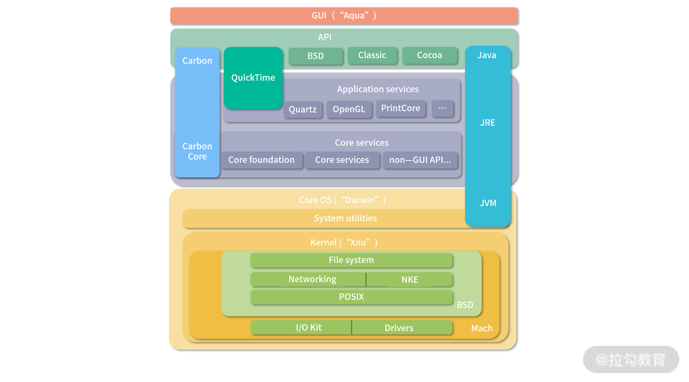

- 00 开篇词 为什么大厂面试必考操作系统？.md.html
- 00 课前必读 构建知识体系，可以这样做！.md.html
- 01 计算机是什么：“如何把程序写好”这个问题是可计算的吗？.md.html
- 02 程序的执行：相比 32 位，64 位的优势是什么？（上）.md.html
- 03 程序的执行：相比 32 位，64 位的优势是什么？（下）.md.html
- 04 构造复杂的程序：将一个递归函数转成非递归函数的通用方法.md.html
- 05 存储器分级：L1 Cache 比内存和 SSD 快多少倍？.md.html
- 05 (1) 加餐 练习题详解（一）.md.html
- 06 目录结构和文件管理指令：rm -rf 指令的作用是？.md.html
- 07 进程、重定向和管道指令：xargs 指令的作用是？.md.html
- 08 用户和权限管理指令： 请简述 Linux 权限划分的原则？.md.html
- 09 Linux 中的网络指令：如何查看一个域名有哪些 NS 记录？.md.html
- 10 软件的安装： 编译安装和包管理器安装有什么优势和劣势？.md.html
- 11 高级技巧之日志分析：利用 Linux 指令分析 Web 日志.md.html
- 12 高级技巧之集群部署：利用 Linux 指令同时在多台机器部署程序.md.html
- 12 (1)加餐 练习题详解（二）.md.html
- 13 操作系统内核：Linux 内核和 Windows 内核有什么区别？.md.html
- 14 用户态和内核态：用户态线程和内核态线程有什么区别？.md.html
- 15 中断和中断向量：Javajs 等语言为什么可以捕获到键盘输入？.md.html
- 16 WinMacUnixLinux 的区别和联系：为什么 Debian 漏洞排名第一还这么多人用？.md.html
- 16 (1)加餐 练习题详解（三）.md.html
- 17 进程和线程：进程的开销比线程大在了哪里？.md.html
- 18 锁、信号量和分布式锁：如何控制同一时间只有 2 个线程运行？.md.html
- 19 乐观锁、区块链：除了上锁还有哪些并发控制方法？.md.html
- 20 线程的调度：线程调度都有哪些方法？.md.html
- 21 哲学家就餐问题：什么情况下会触发饥饿和死锁？.md.html
- 22 进程间通信： 进程间通信都有哪些方法？.md.html
- 23 分析服务的特性：我的服务应该开多少个进程、多少个线程？.md.html
- 23 (1)加餐 练习题详解（四）.md.html
- 24 虚拟内存 ：一个程序最多能使用多少内存？.md.html
- 25 内存管理单元： 什么情况下使用大内存分页？.md.html
- 26 缓存置换算法： LRU 用什么数据结构实现更合理？.md.html
- 27 内存回收上篇：如何解决内存的循环引用问题？.md.html
- 28 内存回收下篇：三色标记-清除算法是怎么回事？.md.html
- 28 (1)加餐 练习题详解（五）.md.html
- 29 Linux 下的各个目录有什么作用？.md.html
- 30 文件系统的底层实现：FAT、NTFS 和 Ext3 有什么区别？.md.html
- 31 数据库文件系统实例：MySQL 中 B 树和 B+ 树有什么区别？.md.html
- 32 HDFS 介绍：分布式文件系统是怎么回事？.md.html
- 32 (1)加餐 练习题详解（六）.md.html
- 33 互联网协议群（TCPIP）：多路复用是怎么回事？.md.html
- 34 UDP 协议：UDP 和 TCP 相比快在哪里？.md.html
- 35 Linux 的 IO 模式：selectpollepoll 有什么区别？.md.html
- 36 公私钥体系和网络安全：什么是中间人攻击？.md.html
- 36 (1)加餐 练习题详解（七）.md.html
- 37 虚拟化技术介绍：VMware 和 Docker 的区别？.md.html
- 38 容器编排技术：如何利用 K8s 和 Docker Swarm 管理微服务？.md.html
- 39 Linux 架构优秀在哪里.md.html
- 40 商业操作系统：电商操作系统是不是一个噱头？.md.html
- 40 (1)加餐 练习题详解（八）.md.html
- 41 结束语 论程序员的发展——信仰、选择和博弈.md.html
16 (1)加餐 练习题详解（三）
今天我会带你把《模块三：操作系统基础知识》中涉及的课后练习题，逐一讲解，并给出每个课时练习题的解题思路和答案。
练习题详解
13 | 操作系统内核：Linux 内核和 Windows 内核有什么区别？
【问题】 Unix 和 Mac OS 内核属于哪种类型？
【解析】 Unix 和 Linux 非常类似，也是宏内核。Mac OS 用的是 XNU 内核， XNU 是一种混合型内核。为了帮助你理解，我找了一张 Mac OS 的内核架构图。 如下图所示，可以看到内部是一个叫作 XNU 的宏内核。XNU 是 X is not Unix 的意思， 是一个受 Unix 影响很大的内核。

Mac OS 内核架构图
14 | 用户态和内核态：用户态线程和内核态线程有什么区别？
【问题】 JVM 的线程是用户态线程还是内核态线程？
【解析】 JVM 自己本身有一个线程模型。在 JDK 1.1 的时候，JVM 自己管理用户级线程。这样做缺点非常明显，操作系统只调度内核级线程，用户级线程相当于基于操作系统分配到进程主线程的时间片，再次拆分，因此无法利用多核特性。
为了解决这个问题，后来 Java 改用线程映射模型，因此，需要操作系统支持。在 Windows 上是 1 对 1 的模型，在 Linux 上是 n 对 m 的模型。顺便说一句，Linux 的PThreadAPI 创建的是用户级线程，如果 Linux 要创建内核级线程有KThreadAPI。映射关系是操作系统自动完成的，用户不需要管。
15 | 中断和中断向量：Java/JS 等语言为什么可以捕获到键盘输入？
【问题】 操作系统可以处理键盘按键，这很好理解，但是在开机的时候系统还没有载入内存，为什么可以使用键盘呢？这个怎么解释？
【解析】 主板的一块 ROM 上往往还有一个简化版的操作系统，叫 BIOS（Basic Input/Ouput System）。在 OS 还没有接管计算机前，先由 BIOS 管理机器，并协助加载 OS 到内存。早期的 OS 还会利用 BIOS 的能力，现代的 OS 接管后，就会替换掉 BIOS 的中断向量。
16 | Win/Mac/Unix/Linux 的区别和联系：为什么 Debian 漏洞排名第一还这么多人用？
【问题】 林纳斯 21 岁写出 Linux，那么开发一个操作系统的难度到底大不大？
【解析】 毫无疑问能在 21 岁就写出 Linux 的人定是天赋异禀，林纳斯是参照一个 Minix 系统写的 Linux 内核。如果你对此感兴趣，可以参考这个 1991 年的源代码。
写一个操作系统本身并不是非常困难。需要了解一些基础的数据结构与算法，硬件设备工作原理。关键是要有参照，比如核心部分可以参考前人的内核。
但是随着硬件、软件技术发展了这么多年，如果想再写一个大家能够接受的内核，是一件非常困难的事情。内核的能力在上升，硬件的种类在上升，所以 Android 和很多后来的操作系统都是拿 Linux 改装。
总结
操作系统中的程序，除去内核部分，剩下绝大多数都可以称为应用。应用是千变万化的，内核是统一而稳定的。操作系统分成 3 层：应用层、内核层、硬件层。因此，内核是连接应用和硬件的桥梁。
内核需要公平的对待每个 CPU，于是有了用户态和内核态的切换；为了实现切换，需要中断；为了保护内存资源，需要划分用户态和内核态；为了更好地使用计算资源，需要划分线程——而线程需要操作系统内核调度。本模块所讲的内容，还只是对内核理解的冰山一角，后面我们还会从多线程、内存管理、文件系统、虚拟化的角度，重新审视内核的设计。
最后，我再跟你分享一下我自己的一点小小心得：在给你讲解操作系统的过程中，我仿佛也回到了 20 世纪 70 年代那个风起云涌的时代。在整理操作系统、编程语言、个人电脑领域的大黑客、发明家、企业家们的故事时，我发现这些程序员，强大的不仅仅是技术和创造力，更多的还是对时机的把握。我觉得从这个角度来看，除了要提升自身的技术能力，你也要重视人文知识的学习，这可以帮助你在以后的工作中做得更好。
好的，操作系统基本概念部分就告一段落。接下来，我们将开始多线程并发相关学习，请和我一起来学习“模块四：进程和线程”吧。